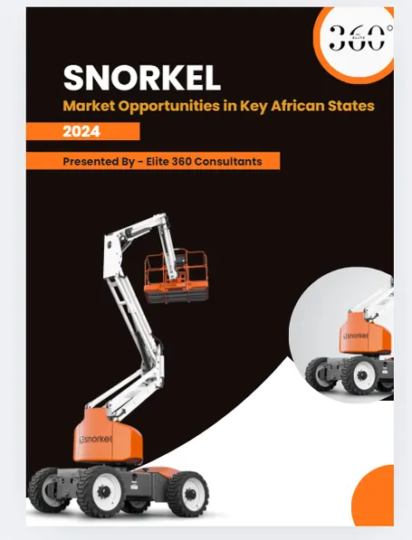
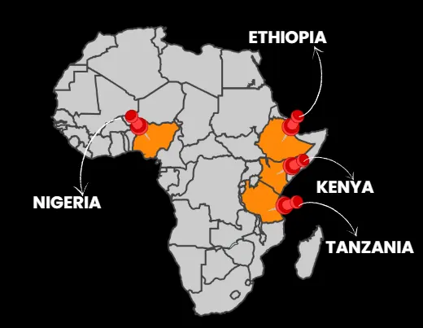
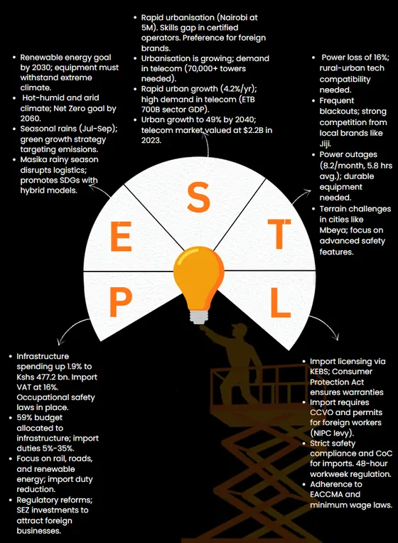
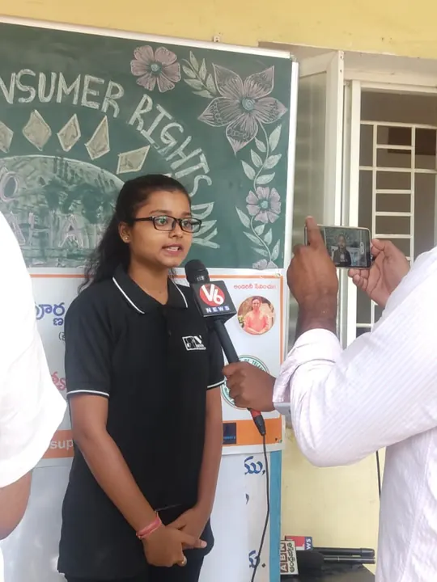
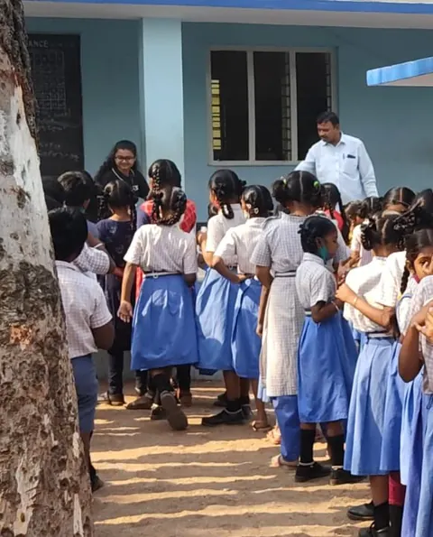
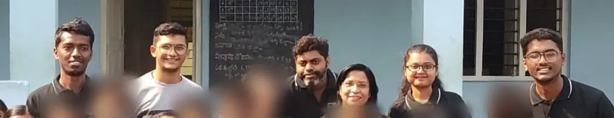

S · M · L · XLled T-shirt sizing of 11 epics into an agreed build order
1.5d → 2 ptsclean re-estimate when the client changed course
3,000students across 15 schools in my volunteer programme
AI-900Microsoft Certified: Azure AI Fundamentals
BOARDCase studies
Three real problems from my BA work at QWARE. Client details changed; the decisions are mine.
User Story#1873Done
The requirement that changed mid-refinement
1.5d → 2 pts
Problem
Members were entering their main website instead of a sub-domain. The client asked for a warning, then changed course during refinement and decided to enforce the prefix.
What I did
Split one broad ticket into a UX story and a reporting story
Audited every line of the brief against both stories
Explained the change as “a spellcheck squiggle versus autocomplete” so everyone could follow
Logged a change request and re-estimated with the developers
Outcome: Re-estimated cleanly from 1.5 dev days to 2 points; the client confirmed the split worked.
A good analogy is a requirements tool.
Show artefacts
US-A · acceptance criteria
Sample data · client details changed
Given I am on the Domain set-up page
When I enter "brightlane.co.uk"
Then the field shows "go.brightlane.co.uk"
And the help text explains why
Requirements coverage
Line
Requirement
Story
BR-01
Members must not use their main website
US-A
BR-02
Explain why the prefix is needed
US-A
BR-04
Report shows who changed their domain
US-B
BR-05
Admins can override
Question for PO
User Story#1911Done
The story that looked like 1 point
3 blockers
Problem
Point a test environment at a new generator service and add one export format. It looked trivial, but the copy, the scope and the release route were all unclear.
What I did
Treated each gap as an unresolved requirement, not a developer problem
Logged “agree the deployment route first” for the dev lead
Took copy and scope questions to the product owner
Kept the story lean: user story, short note, acceptance criteria
Outcome: Estimate held at a provisional 1 point, with three blockers surfaced before build.
A small estimate is only as good as the questions asked before it.
Show artefacts
Open items log
Sample data · client details changed
#
Open item
Owner
OI-1
Tooltip wording for the new format
Product owner
OI-2
Replace all formats, or only the new one?
Product owner
OI-3
Agree the deployment route first
Dev lead
Epic#1802Done
Planning a new internal product: 11 epics, one delivery plan
S · M · L · XL
Problem
Our team was building a new internal product with 11 epics, very little detail and no tech lead available. Management wanted user stories quickly.
What I did
Set up all 11 epics in Azure DevOps and ran structured refinement sessions
Wrote first-draft stories from developer notes, clearly tagged “draft, pending validation”
Led an epic review with the team: sized each epic (S, M, L, XL) and agreed the build order
Tracked 16 set-up tickets on one page, with what was blocking each one
Outcome: A sized, agreed delivery plan: shared foundation first, four epics in parallel, the largest last. Overlapping epics were merged, so nothing was built twice. Half the set-up tickets were ready for testing; the rest each had a named next step.
When detail is missing, structure is the deliverable.
Snorkel, a global maker of aerial work platforms, wanted to expand into emerging African markets. We ran internal and external audits, compared countries on GDP growth, sector contribution, inflation and population, and built a PESTEL view for each shortlisted market.
Outcome: recommended Nigeria, Ethiopia, Kenya and Tanzania, with the risks to plan for in each.


Show the PESTEL page

Feature#1150Done
Call-centre KPI dashboard in Power BI
Personal project · public sample dataset
One page a call-centre manager can use to see call volume, answer and resolution rates, speed of answer and satisfaction by agent, with slicers for agent, status and date.
81.1%calls answered
72.9%calls resolved
67.5 saverage speed of answer
3.40 / 5average satisfaction
A dashboard earns its place when the first glance answers the first question.
SPRINTSExperience
Newest first.
Business Analyst
QWARE
Gather and analyse changing client requirements; write epics, features and user stories with acceptance criteria in Azure DevOps
Facilitate stand-ups, sprint planning, refinement and retrospectives
Lead estimation and costing sessions with developers
Own the dashboards stakeholders use to track delivery
Junior Business Analyst
Indian Institute of Hotel Management & Culinary Arts
Analysed admissions and student data to inform admissions and student-services decisions
Built enrolment and satisfaction reports; ran competitor and market research
Project Engineer
Wipro
Investigated client issues in Oracle and SQL within agreed timelines
Produced daily and monthly performance reports for team leads and clients
BACKLOGSkills
Each skill with where I’ve used it.
Requirements
Elicitation: workshops and interviewsQWARE, IIHM
User stories with Given/When/ThenCase study 1
Traceability and coverage checksCase study 1
Change requests and impact analysisCase studies 1 and 2
Agile delivery
Scrum ceremoniesQWARE, 2–4 week sprints
Refinement and estimationCase study 3
Epic structuring and dependenciesCase study 3
Status reporting for stakeholdersAzure DevOps dashboards
Analysis & strategy
Process mapping, BPMN 2.0As-is / to-be
MoSCoW prioritisationCase study 3
PESTEL, SWOT, Porter’s Five ForcesSnorkel project
Stakeholder management at scale3,000-student programme
Data & tools
SQL and Oracle investigationWipro
Power BI dashboardsCall-centre project
Azure DevOps boards and dashboardsQWARE
Azure AI FundamentalsAI-900 certified
WIKIEducation & certifications
2023 – 2025MSc Business and Management (Advanced Practice)Northumbria University, Newcastle upon Tyne
2017 – 2021BTech Electronics and Communication EngineeringNNRG, Hyderabad, India
Microsoft Certified: Azure AI FundamentalsAI-900
Business Analysis FoundationsLinkedIn Learning
Agile Requirements FoundationsLinkedIn Learning
Generative AI and Agentic AI for Business AnalystsCertification
Power AppsMicrosoft Power Platform
Power BI Desktop for Business IntelligenceUdemy, 2024
Strategy for Management Consultants and Business AnalystsUdemy, 2024
WIKIVolunteering
Vice President, White Volunteers Foundation · Hyderabad, India · 2021 – present
15government schools adopted
3,000students supported
+5%campaign reach and donations
A free breakfast every school day, plus books for the students
Skills teaching for students and awareness campaigns in the community
Donor relationships and fundraising campaigns
Recruiting, training and coordinating volunteer teams
Stakeholder management at real scale: donors, volunteers, school staff and families, each with different priorities.

Speaking to V6 News on Consumer Rights Day, one of our awareness campaigns

Students queuing for the free daily breakfast

Part of our volunteer team (children blurred for privacy)
Let’s talk.
Open to Business Analyst roles across the UK: Newcastle, hybrid or remote, and open to relocating for the right team.